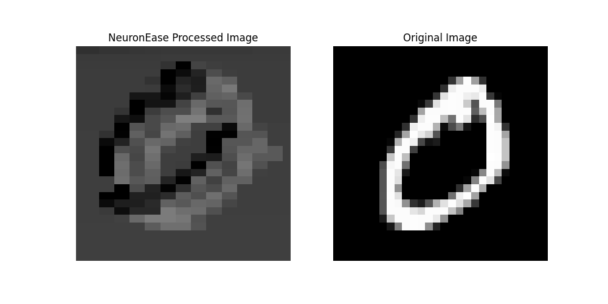
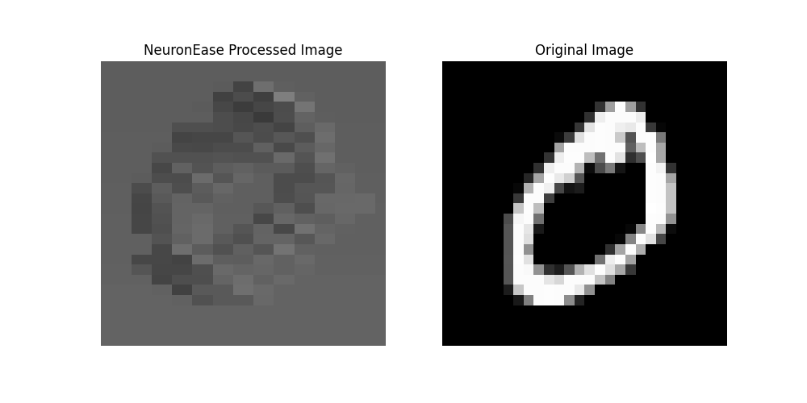
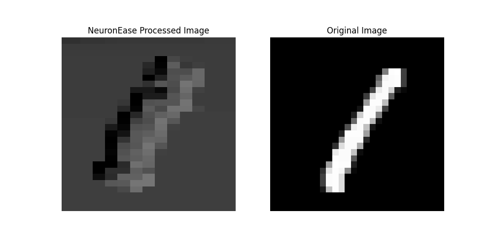
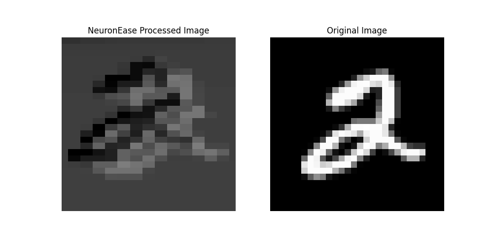
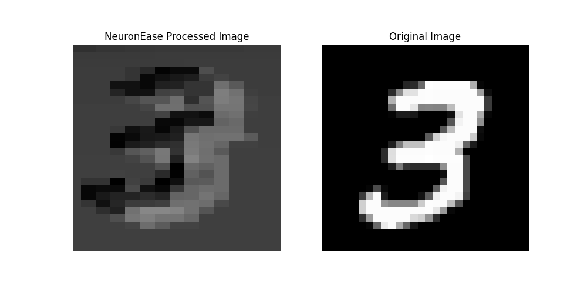
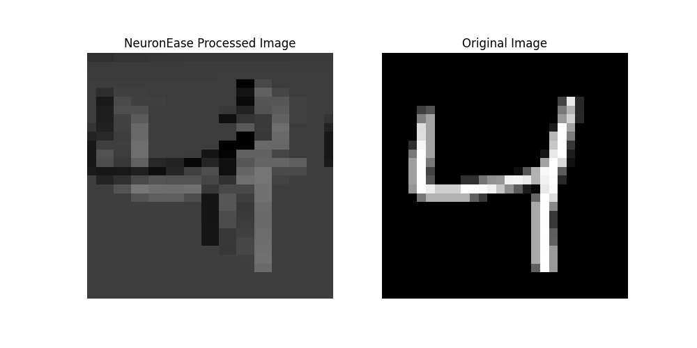

ProjectAnalog computeFinal-year project, IIT Mandi · advised by Dr. Srinivasu Bodapati
NeuronEase: a memristor crossbar for neural-network inference
Doing multiply-accumulate in the analog domain, by letting Ohm's law and Kirchhoff's current law do the arithmetic instead of a digital multiplier array — carried from a 2×2 proof in SPICE to an INT8 CNN reading real handwritten digits.
Neural-network inference is dominated by one operation: multiply-accumulate. A conventional accelerator does this digitally — a grid of multiplier-adder units, clocked, pipelined, power-hungry. NeuronEase was my final-year project exploring the alternative: doing the multiply-accumulate in the analog domain, using the physics of a memristor crossbar array instead of digital logic.
Why a crossbar does MAC for free
A memristor crossbar is a grid of resistive memory elements, each one programmable to a conductance that represents a weight. Feed a voltage (the input activation) into a row, and by Ohm's law the current through each memristor at that row is proportional to voltage × conductance — a multiplication, done physically, with no clock cycle. Kirchhoff's current law then sums every current flowing into a column automatically. Row-by-row multiply, column-wise accumulate — the crossbar's wiring is the MAC unit.
Proving it at 2×2, in SPICE
Before scaling to anything resembling a real network, the first goal was the smallest possible proof: a 2×2 weight matrix, realized as four memristors, verified against the matrix-multiply it was supposed to compute. Programming one memristor to a high-resistance ("off") state and the rest to low-resistance ("on") sets a specific known weight matrix; driving the crossbar's rows with two independent voltage sources and watching the column currents confirms — cycle by cycle, in a transient SPICE simulation in Cadence Virtuoso — that the currents track the matrix-vector product the weights were programmed to represent. That small, verifiable result is what everything after it builds on.
Scaling the same idea to a real kernel
The same programming principle extends directly from a toy 2×2 matrix to an actual image-processing kernel: a 3×3 box-blur filter loaded into the crossbar as a weight file, one bit per memristor, and an input image driven through it row by row. The crossbar computes the weighted sum for each output pixel the same way it computed the 2×2 case — just with more terms accumulating into the same column.
How inference actually runs
Two phases, every time the crossbar is used for something new: programming, then inference.
flowchart LR
subgraph Program["1. Program weights"]
W["Trained kernel /\nlayer weights"] --> RCD["Row / column\ndecoders"]
RCD --> XB[("Memristor\ncrossbar")]
end
subgraph Infer["2. Run inference"]
IN["Input activations"] --> DAC["DACs"]
DAC --> XB
XB -->|"Ohm's law × KCL"| ADC["ADCs"]
ADC --> ACT["Activation /\nnext layer"]
end
Program -.-> Infer
Scaling further: an INT8 CNN on a 9×8 crossbar
The final stage of the project was mapping an actual trained CNN onto the crossbar, not just a hand-picked kernel. The network — trained in TensorFlow — is small on purpose: one 3×3 convolutional layer with 12 kernels, a max-pool, and a dense layer down to 10 outputs, 20,410 parameters in total. Quantized to INT8 through TFLite, that model's first-layer kernels and biases are what get programmed onto a 9×8 memristor crossbar, with row and column decoders addressing individual weights and a convolution controller sequencing the kernel across the input image.
Going from the earlier 2×2 proof to this stage meant solving problems that a same-sign toy example doesn't have: 8-bit-wide conductance levels instead of a single on/off state per cell, and negative weights — which a crossbar's conductance (always positive) can't represent directly, so the sign has to be handled separately from the magnitude before or after the analog multiply.
Results: MNIST through the crossbar
The figures below are the crossbar's own analog output for the first convolutional layer — each one is a real ADC readout from the simulation, not a software reference — reshaped back into an image so it's visible what one trained kernel actually does to a handwritten digit.






Two different kernels on the same digit produce visibly different responses — exactly what you'd want from independently-trained feature detectors, and a real (if indirect) confirmation that the analog hardware is computing something close enough to the trained digital weights to preserve that distinction.
What it costs in cycles
Programming a 3×3 kernel into the crossbar takes 9 clock cycles — one per weight, since each is written to a separate memristor column. Running one full 28×28 image through takes roughly 9,000 cycles, which works out to about 12 cycles per pixel: 9 for fetching the relevant kernel weights, 1 for the analog compute itself, 1 for ADC sampling, and 1 for syncing the result back into digital storage. The compute step is the one part of that count the crossbar makes nearly free — it's the surrounding digital bookkeeping that dominates.
Where analog MAC gets hard
The appeal of a crossbar is that the array does the arithmetic passively. The hard part is everything around it: memristor devices don't program to an exact conductance and drift over time, so weight precision is limited by device variability rather than by how many bits you're willing to spend. Peripheral circuits — DACs to drive rows, ADCs to read columns — have to convert in and out of the analog domain without eating the energy savings the crossbar was supposed to provide. Getting the compact model to track real device non-idealities closely enough for the simulation to mean something was a large part of the work.
Where it sits
This project is what pulled me toward verification and hardware quality more broadly — modeling a device accurately enough to trust the simulation is, in a lot of ways, the same discipline as verifying that a design behaves as specified before it reaches silicon.